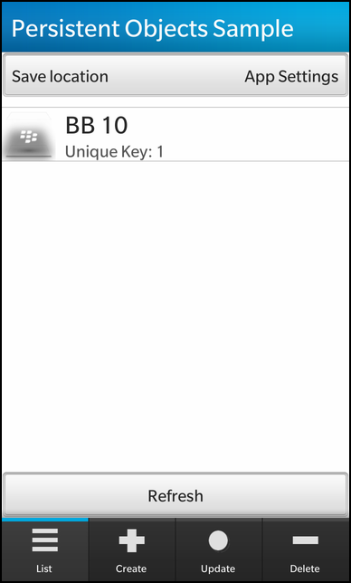
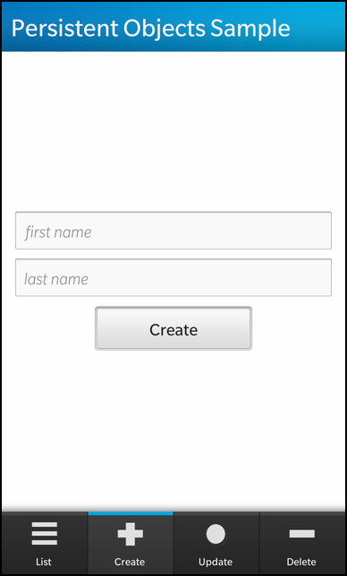

Persistent Objects Example
Files:
- persistentobjects/assets/CreatePage.qml
- persistentobjects/assets/DeletePage.qml
- persistentobjects/assets/ListPage.qml
- persistentobjects/assets/UpdatePage.qml
- persistentobjects/assets/main.qml
- persistentobjects/src/FileStorage.cpp
- persistentobjects/src/FileStorage.hpp
- persistentobjects/src/Person.cpp
- persistentobjects/src/Person.hpp
- persistentobjects/src/SettingsStorage.cpp
- persistentobjects/src/SettingsStorage.hpp
- persistentobjects/src/Storage.cpp
- persistentobjects/src/Storage.hpp
- persistentobjects/src/app.cpp
- persistentobjects/src/app.hpp
- persistentobjects/src/main.cpp
- persistentobjects/persistentobjects.pro
- persistentobjects/translations/persistentobjects.pro
Description
The persistent object example demonstrates the various stages, create/load/write/update, of a persistent object that can be saved either to a file or to a QSettings object.




Overview
In this example we'll learn how to create persistent objects, either through QSettings or a file, update them, load them and delete them.
UI
The UI of this sample application is very simplistic, made up of four Tab's that represent each of the persistent object stages, such as "List", "Create", "Update" and "Delete".
The business logic of the application is encapsulated in the "app" class, which provides the various invokable methods for each one of these actions. However, the storage logic can be found in the SettingsStorage, and FileStorage classes.
TabbedPane { id: root showTabsOnActionBar: true Tab { title: qsTr("List") imageSource: "asset:///images/retrieve.png" ListPage { } } Tab { title: qsTr("Create") imageSource: "asset:///images/create.png" CreatePage { } } Tab { title: qsTr("Update") imageSource: "asset:///images/update.png" UpdatePage { } } Tab { title: qsTr("Delete") imageSource: "asset:///images/delete.png" DeletePage { } } }
Each of these Tab's provides an interface to invoke one of the methods that was exposed through the _app instance that was introduced into the qml context using setContextProperty(). Each Tab references the custom component related to it's action, i.e create => CreatePage.qml.
Container { layout: DockLayout { } Container { horizontalAlignment: HorizontalAlignment.Center verticalAlignment: VerticalAlignment.Center leftPadding: 30 rightPadding: 30 TextField { id: firstName horizontalAlignment: HorizontalAlignment.Center hintText: qsTr("first name") } TextField { id: lastName horizontalAlignment: HorizontalAlignment.Center hintText: qsTr("last name") } Button { horizontalAlignment: HorizontalAlignment.Center text: qsTr("Create") onClicked: { _app.addObject(firstName.text, lastName.text); } } } }
The create container that provides Name TextField's and a "Create" Button for creating a person object.
Container { horizontalAlignment: HorizontalAlignment.Center verticalAlignment: VerticalAlignment.Center leftPadding: 30 rightPadding: 30 TextField { id: idField horizontalAlignment: HorizontalAlignment.Center hintText: qsTr("ID") } Button { horizontalAlignment: HorizontalAlignment.Center text: qsTr("Delete") onClicked: { _app.deleteObject(idField.text); } } Button { horizontalAlignment: HorizontalAlignment.Center text: qsTr("Delete All") onClicked: { _app.clearObjects(); } } }
The delete container that provides object ID TextField and "Delete/Delete All" Buttons for deleting a person by ID or all person object(s).
DropDown { horizontalAlignment: HorizontalAlignment.Fill title: qsTr("Save location") Option { text: qsTr("App Settings") description: qsTr("Store in the application's settings") value: App.StoreInSettings selected: true } Option { text: qsTr("Custom File") description: qsTr("Stream to file in data folder.") value: App.StoreInFile } onSelectedValueChanged: { _app.setStorageLocation(selectedValue); } } ListView { dataModel: _app.dataModel listItemComponents: [ ListItemComponent { type: "item" StandardListItem { imageSource: "asset:///images/icon1.png" title: qsTr("%1 %2").arg(ListItemData.firstName).arg(ListItemData.lastName) description: qsTr("Unique Key: %1").arg(ListItemData.customerID) } } ] } Button { horizontalAlignment: HorizontalAlignment.Fill text: qsTr("Refresh") onClicked: { _app.refreshObjects(); // Refresh the list view. } }
This page has a DropDown for selecting the type of persistent storage the app is to use. This Control is followed by a Container that provides a ListView using StandardListItem to display Person object(s) and a "Refresh" Button for retrieving the Person object(s) for display.
Container { horizontalAlignment: HorizontalAlignment.Center verticalAlignment: VerticalAlignment.Center leftPadding: 30 rightPadding: 30 TextField { id: idField horizontalAlignment: HorizontalAlignment.Center hintText: qsTr("ID") } TextField { id: firstName horizontalAlignment: HorizontalAlignment.Center hintText: qsTr("first name") } TextField { id: lastName horizontalAlignment: HorizontalAlignment.Center hintText: qsTr("last name") } Button { horizontalAlignment: HorizontalAlignment.Center text: qsTr("Update") onClicked: { _app.updateObject(idField.text, firstName.text, lastName.text); } } }
The update container provides object ID, first/last name TextField's and a "Update" Button for updating the Person object that corresponds to the given ID.
App
This app class contains the business logic dealing with the Person instance(s) and the different types of storage.
App::App(QObject *parent) : QObject(parent) , m_lastCustomerID(0) , m_storageLocation(StoreInQSettings) , m_storage(new SettingsStorage) { // Initialize the data model before the UI is loaded // and built so its ready to be used. initDataModel(); QmlDocument *qml = QmlDocument::create("asset:///main.qml").parent(this); qml->setContextProperty("_app", this); AbstractPane *root = qml->createRootObject<AbstractPane>(); Application::instance()->setScene(root); }
The constructor intitializes the instance variables with default values, and creates the qml document as well as setting the application scene to the created AbstractPane which stems from the document.
// Create a unique identifier and save the person information // to the data model and store the datamodel in the // selected storage location. bool App::addObject(const QString &firstName, const QString &lastName) { bool added = false; m_lastCustomerID++; const QString id = QString::number(m_lastCustomerID); // Note: The person object will be destroyed // when the data model is destroyed. Person *person = new Person(id, firstName, lastName); // To keep the person in memory assign it a parent in // the parameter list like this: // Person *person = new Person(id, firstName, lastName, parent); m_dataModel->insert(person); added = m_storage->save(m_lastCustomerID, m_dataModel); return added; } // Change the first and last name of the person with the given id. bool App::updateObject(const QString &id, const QString &firstName, const QString &lastName) { bool updated = false; bool saved = false; if (!validateID(id)) return false; Person *person = new Person(id, firstName, lastName); // Find person in the datamodel. // Only the id is used by find(). This is because Person // defines equality (==) as having the same id. (See the definition of "==" // in the person class.) const QVariantList updateIndexPath = m_dataModel->find(person); // update the item if found if (updateIndexPath.isEmpty()) { alert(tr("Object ID not found.")); updated = false; } else { updated = m_dataModel->updateItem(updateIndexPath, person); } // Save the datamodel if we updated something. if (updated) { saved = m_storage->save(m_lastCustomerID, m_dataModel); } return (updated && saved); } bool App::deleteObject(const QString &customerID) { bool deleted = false; bool saved = false; if (!validateID(customerID)) return false; // Create a person object with the required id. // The name can be left out because find() will use the == operator // defined in the Person class. See Person.cpp Person *person = new Person(customerID, QString(), QString()); const QVariantList deleteIndexPath = m_dataModel->find(person); if (deleteIndexPath.isEmpty()) { alert(tr("Object ID not found.")); } else { deleted = m_dataModel->removeAt(deleteIndexPath); } if (deleted) { saved = m_storage->save(m_lastCustomerID, m_dataModel); } return (deleted && saved); }
The update function, when invoked, generates a object ID(could be based on last ID loaded from storage, if one existed), creates a Person object with this ID, adds it to the GroupDataModel and saves the object using the selected storage.
// Change the first and last name of the person with the given id. bool App::updateObject(const QString &id, const QString &firstName, const QString &lastName) { bool updated = false; bool saved = false; if (!validateID(id)) return false; Person *person = new Person(id, firstName, lastName); // Find person in the datamodel. // Only the id is used by find(). This is because Person // defines equality (==) as having the same id. (See the definition of "==" // in the person class.) const QVariantList updateIndexPath = m_dataModel->find(person); // update the item if found if (updateIndexPath.isEmpty()) { alert(tr("Object ID not found.")); updated = false; } else { updated = m_dataModel->updateItem(updateIndexPath, person); } // Save the datamodel if we updated something. if (updated) { saved = m_storage->save(m_lastCustomerID, m_dataModel); } return (updated && saved); } bool App::deleteObject(const QString &customerID) { bool deleted = false; bool saved = false; if (!validateID(customerID)) return false; // Create a person object with the required id. // The name can be left out because find() will use the == operator // defined in the Person class. See Person.cpp Person *person = new Person(customerID, QString(), QString()); const QVariantList deleteIndexPath = m_dataModel->find(person); if (deleteIndexPath.isEmpty()) { alert(tr("Object ID not found.")); } else { deleted = m_dataModel->removeAt(deleteIndexPath); } if (deleted) { saved = m_storage->save(m_lastCustomerID, m_dataModel); } return (deleted && saved); }
These functions manipulate the data model by updating their Person object(s) or deleting them, but whenever changes occur to the object(s) in the model it is saved to the selected storage location.
// Read all objects from file. // Clear the data model and refill it. void App::refreshObjects() { const int objectsReadCount = load(); if (objectsReadCount == 0) { alert(tr("The customer list is empty.")); } else { alert(tr("%1 objects loaded.").arg(objectsReadCount)); } } int App::load() { m_dataModel->clear(); const int loaded = m_storage->load(m_lastCustomerID, m_dataModel); return loaded; }
The following refreshes the data model with persistent objects, if ones exist, by invoking the load() member function. The load function in turn invokes the storage->load() function to re-load the data model with all the Person objects from the selected storage type. This function is mainly called when the user switches between storage types.
void App::setStorageLocation(StorageLocations location) { // If location changed, then reload the data model // to get the objects there. if (m_storageLocation != location) { m_storageLocation = location; delete m_storage; if (m_storageLocation == StoreInQSettings) { m_storage = new SettingsStorage(); } else { m_storage = new FileStorage(); } refreshObjects(); } }
This function changes the current storage type by deleting the pointer to the previous one and creating the newly selected storage instance. Afterwards, it calls the refreshObjects() function in order to populate the data model with the persistent objects, if any exist, that were found in the storage.
Storage
class Storage { public: Storage(); virtual ~Storage(); virtual bool clear() = 0; virtual int load(int& lastID, GroupDataModel *model) = 0; virtual bool save(int lastID, GroupDataModel *model) = 0; };
This is a base class from which all the storage type classes stem from, which enforces common member functions as a java interface would.
SettingsStorage
This class represents the type of storage based on a QSettings instance.
bool SettingsStorage::save(int lastID, GroupDataModel *model) { QSettings settings(m_author, m_appName); settings.setValue(m_lastCustomerIDKey, lastID); settings.beginWriteArray(m_personListSettingsKey); for (int i = 0; i < model->size(); i++) { settings.setArrayIndex(i); Person *person = (Person *) model->children()[i]; settings.setValue(m_customerIDKey, person->customerID()); settings.setValue(m_firstNameKey, person->firstName()); settings.setValue(m_lastNameKey, person->lastName()); } settings.endArray(); return true; }
This function saves the current state of the GroupDataModel to the QSettings instance, by saving the last Person ID under the "PersonList_LastCustomerID" key. In order to store the Person object(s), the QSettings provides a beginWriteArray() function which allows us to write the objects under the "PersonList" key as a type of array, which can later be read back using beginReadArray().
int SettingsStorage::load(int& lastID, GroupDataModel *model) { // number of persons loaded. int loadedCount = 0; // Get a handle on the settings object for this // author and application. QSettings settings(m_author, m_appName); // Get the last customer id first. // ID's will be generated by incrementing this number // Note values coming from settings should be cast to the // required type. lastID = settings.value(m_lastCustomerIDKey, 0).toInt(); // This function opens an array to add values to, and returns the // Close it with endArray() so that subsequent reads are not // from this array. const int personCount = settings.beginReadArray(m_personListSettingsKey); // Load all the persons in the settings array. for (int i = 0; i < personCount; i++) { settings.setArrayIndex(i); Person *p; if (loadPerson(settings, p)) { model->insert(p); loadedCount++; } else { break; } } settings.endArray(); // Use the same function for read or write to close the array return loadedCount; } bool SettingsStorage::loadPerson(const QSettings& settings, Person*& person) const { bool loaded = false; // Make sure keys exist before loading into person object. if (settings.contains(m_customerIDKey) && settings.contains(m_firstNameKey) && settings.contains(m_lastNameKey)) { person = new Person(); // this will go in the datamodel and will be destroyed from there. person->setCustomerID(settings.value(m_customerIDKey).toString()); person->setFirstName(settings.value(m_firstNameKey).toString()); person->setLastName(settings.value(m_lastNameKey).toString()); loaded = true; } else { //Invalid person data in settings. return false; } return (loaded && person); // Don't return true if person was not set. }
These functions allow for loading the persistent objects from the settings instance, by retrieving the last object ID, and reading in all the Person object(s) using the beginReadArray() function provided by QSettings. Each array index is traversed, which is represented as a subkey under the key that the array was stored:
... PersonList/2/firstName PresonList/3/lastName ...
FileStorage
This class represents the type of storage based on a file to which Person object(s) are serialized or deserialized to.
bool FileStorage::save(int lastID, GroupDataModel *model) { QFile personFile(m_personsFilePath); if (!personFile.open(QIODevice::WriteOnly)) return false; QDataStream stream(&personFile); // Open a stream into the file. const bool saved = serializeDataModel(lastID, model, &stream); // Put the data model into the stream. personFile.close(); return saved; } bool FileStorage::serializeDataModel(int lastID, GroupDataModel* model, QDataStream* stream) { // This is a simple serialization function. // For more info on dealing with complex types, // or incorporating file versions see "Serializing data type in Qt" // http://qt-project.org/doc/qt-4.8/datastreamformat.html bool addedData = false; *stream << lastID; if (stream->status() == QDataStream::Ok) { for (int i = 0; i < model->size(); i++) { Person *person = (Person *) model->children()[i]; *stream << person->customerID() << person->firstName() << person->lastName(); if (stream->status() != QDataStream::Ok) { return addedData = false; } } addedData = true; } return addedData; }
This member function serializes all the Person object(s) in the data model to a file. The serialization is done using a QDataStream, the first value to be written independantly of the objects is the last object ID used; afterwards, the Person object(s) are serialized, by writing the object members values, sequentially.
int FileStorage::load(int& lastID, GroupDataModel *model) { // return the number of persons loaded. int loadedCount = 0; // open the custom file for writing. QFile file(m_personsFilePath); if (!file.open(QIODevice::ReadOnly)) { return loadedCount; } // Load from the stream into the dataModel. // The function deserializeIntoDataModel() will create the person instances // and add them to the given dataModel QDataStream stream(&file); loadedCount = deserializeIntoDataModel(&stream, model, lastID); file.close(); return loadedCount; } int FileStorage::deserializeIntoDataModel(QDataStream *stream, GroupDataModel *model, int& lastID) { // Return number of persons deserialized. int loadedCount = 0; // Check in case the stream is empty. if (stream->atEnd()) return loadedCount; // 1. Get the last customer id from the stream and set the member. if (!loadLastCustomerID(stream, lastID)) return loadedCount; // 2. Get the person objects. while (!stream->atEnd()) { if (loadPerson(stream, model)) { loadedCount++; } else { break; // Stop reading after error. } } return loadedCount; } bool FileStorage::loadPerson(QDataStream* stream, GroupDataModel *model) { bool loaded = false; // Load the data into temporary variables. QString id, firstName, lastName; *stream >> id >> firstName >> lastName; // Check for errors in the read. if (stream->status() == QDataStream::Ok) { // Add a new person object to the data model. model->insert(new Person(id, firstName, lastName)); // Note the model will delete Person when the time comes. loaded = true; } return loaded; }
The load() function deserializes all the Person object(s) form the storage file and restores them into the data model. Once again the deserialization is done using a QDataStream, recaping the serialization process we know that the first value of the stream is the ID of the last object that was saved. After reading in the "last object ID", the Person object(s) are read in sequentially by reading the object member values in the same order that they were written to. The read/write order is very important to maintain for serialization/deserialization to work properly.